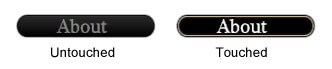

UDN
Search public documentation:
MobileMenuTechnicalGuide
日本語訳
中国翻译
한국어
Interested in the Unreal Engine?
Visit the Unreal Technology site.
Looking for jobs and company info?
Check out the Epic games site.
Questions about support via UDN?
Contact the UDN Staff
中国翻译
한국어
Interested in the Unreal Engine?
Visit the Unreal Technology site.
Looking for jobs and company info?
Check out the Epic games site.
Questions about support via UDN?
Contact the UDN Staff
UE3 Home > Mobile Home > Mobile Menu Technical Guide
UE3 Home > User Interfaces & HUDs > Mobile Menu Technical Guide
UE3 Home > User Interfaces & HUDs > Mobile Menu Technical Guide
Mobile Menu Technical Guide
Overview
Scenes
MobileMenuScene
TheMobileMenuScene class is the base class for all scenes in the mobile menu system. It defines the behavior of a basic scene; handles input from the user, draws the controls, etc.
MobileMenuScene Properties
Display- SceneCaptionFont - Specifies a single font to use for drawing the captions of all buttons in the scene.
- Opacity - The overall opacity of the scene and all of its controls.
- MenuName - Specifies a unique name by which the scene can be identified.
- MenuObjects - An array holding all the scene's control objects.
- InputOwner - A reference to the
MobilePlayerInputresponsible for managing the scene. - bSceneDoesNotRequireInput - If TRUE, the scene will receive no touch input. Otherwise, input will be passed to the scene for handling. The default is FALSE. Setting this to TRUE essentially makes the scene a heads up display.
- Left - The horizontal location in pixels of the left edge of the scene. Note: This can be specified as a relative location in the range [0.0, 1.0] in the default properties, but it will be converted to pixels when the scene is initialized.
- Top - The vertical location in pixels of the top edge of the scene. Note: This can be specified as a relative location in the range [0.0, 1.0] in the default properties, but it will be converted to pixels when the scene is initialized.
- Width - The width of the scene. Note: This can be specified as a relative location in the range [0.0, 1.0] in the default properties, but it will be converted to pixels when the scene is initialized.
- Height - The height of the scene. Note: This can be specified as a relative location in the range [0.0, 1.0] in the default properties, but it will be converted to pixels when the scene is initialized.
- bRelativeLeft - If TRUE, the
Leftvalue specified in the default properties will be treated as a relative value in the range [0.0, 1.0] and converted to an absolute pixel value when the scene is initialized. - bRelativeTop - If TRUE, the
Topvalue specified in the default properties will be treated as a relative value in the range [0.0, 1.0] and converted to an absolute pixel value when the scene is initialized. - bRelativeWidth - If TRUE, the
Widthvalue specified in the default properties will be treated as a relative value in the range [0.0, 1.0] and converted to an absolute pixel value when the scene is initialized. - bRelativeHeight - If TRUE, the
Heightvalue specified in the default properties will be treated as a relative value in the range [0.0, 1.0] and converted to an absolute pixel value when the scene is initialized. - bApplyGlobalScaleLeft - If TRUE, the
Leftvalue will be multiplied by the global scale factor in the X direction. This allows for proper positioning when targeting multiple devices with different screen resolutions and pixel densities. - bApplyGlobalScaleTop - If TRUE, the
Topvalue will be multiplied by the global scale factor in the Y direction. This allows for proper positioning when targeting multiple devices with different screen resolutions and pixel densities. - bApplyGlobalScaleWidth - If TRUE, the
Widthvalue will be multiplied by the global scale factor in the X direction. This allows for proper positioning when targeting multiple devices with different screen resolutions and pixel densities. - bApplyGlobalScaleHeight - If TRUE, the
Heightvalue will be multiplied by the global scale factor in the Y direction. This allows for proper positioning when targeting multiple devices with different screen resolutions and pixel densities.
- UITouchSound - References a SoundCue to play when a touch event occurs.
- UIUnTouchSound - References a SoundCue to play when an untouch event occurs.
MobileMenuScene Functions
Display- GetGlobalScale[X/Y] - Returns the horizontal or vertical global scale factor depending on the device the game is running on.
- RenderScene [Canvas] [RenderDelta] - Called by the
InputOwnerto render the scene. Simply callsRenderObject()on all controls belonging by the scene.- Canvas - References the
Canvasto use to draw the scene. - RenderDelta - Holds the amount of time since the last render cycle.
- Canvas - References the
- InitMenuScene [PlayerInput] [ScreenWidth] [ScreenHeight] - Called by the engine to initialize the scene and its controls.
- PlayerInput - References the
MobilePlayerInputresponsible for managing the scene. - ScreenWidth - Holds the width of the screen of the device the game is running on.
- ScreenHeight - Holds the height of the screen of the device the game is running on.
- PlayerInput - References the
- Opened [Mode] - Called when the scene has been opened.
- Mode - Holds the optional string passed to the
OpenMenuScene()function ofMobilePlayerInput.
- Mode - Holds the optional string passed to the
- MadeTopMenu - Called when the scene becomes the top scene in the stack, either by being opened or by another scene being closed.
- Closing - Called when the scene is requested to be closed, but before the closing process occurs. Return TRUE to allow the scene to be closed. Return FALSE to override the closing and remain open.
- Closed - Called when the scene has been closed and removed from the scene stack of the
Inputowner. - CleanUpScene - Native. Cleans up all scene references and memory.
- FindMenuObject [Tag] - Returns a control from the
MenuObjectsarray matching the givenTag.- Tag - The
Tagof the control to search for.
- Tag - The
- OnTouch [Sender] [TouchX] [TouchY] [bCancel] - Event stub called by engine when a touch (on the Untouch event) occurs on a control owned by the scene. Subclasses should override this to provide custom functionality for control touches.
- Sender - References the
MobileMenuObjectthat was touched. - TouchX - Holds the horizontal location in pixels of the touch.
- TouchY - Holds the vertical location in pixels of the touch.
- bCancel - If TRUE, the touch was canceled by an outside force, such as a system event, and not from the user.
- Sender - References the
- OnSceneTouch [EventType] [TouchX] [TouchY] - Event stub called by the engine when any touch event occurs on the device. Return TRUE if the input was handled. Otherwise, return false to pass the input on. Subclasses should override this to provide custom touch input processing not necessarily directly related to the controls of the scene.
 IMPORTANT: Currently this is only called when a touch occurs outside the bounds of the scene to allow scenes to handle external touch input, but is expected to be reworked to be a general input handler as described.
IMPORTANT: Currently this is only called when a touch occurs outside the bounds of the scene to allow scenes to handle external touch input, but is expected to be reworked to be a general input handler as described. - EventType - Holds the EZoneTouchEvent type of the touch event. See the Mobile Input System page for more information on touch event types.
- TouchX - Holds the horizontal location in pixels of the touch.
- TouchY - Holds the vertical location in pixels of the touch.
- MobileMenuCommand [Command] - Executes an exec or console command. Currently not implemented.
- Command - The exec or console command to execute.
Controls
MobileMenuObject
TheMobileMenuObject class is the base class for all controls in the mobile menu system. Controls have two states, 'touched' and 'not touched', and it can have a distinct appearance and/or behavior for each of these states. The default state is 'not touched', which it remains at until touched by the user. When touched, it enters the 'touched' state until no longer being touched by the user, at which point it returns to the not 'touched' state.
Note: The use of the term "state" above does not refer to the State feature of UnrealScript. Rather, it is simply used to denote that controls can have different appearances and/or behavior based on input from the user.
MobileMenuObject Properties
Display- bIsHidden - If TRUE, the control will not be rendered.
- bIsHighlighted - If TRUE, the control will be 'highlighted', e.g. a radio button that is selected.
- Opacity - The opacity of the control.
- bHasBeenInitialized - If TRUE, the control has been initialized to the current screen size.
- Tag - Specifies a unique name by which the control can be identified.
- OwnerScene - References the
MobileMenuScenethe control belongs to.
- TopLeeway - Specifies how far a touch can be outside the hitbox along the top edge of the control and still be considered over the control.
- BottomLeeway - Specifies how far a touch can be outside the hitbox along the bottom edge of the control and still be considered over the control.
- LeftLeeway - Specifies how far a touch can be outside the hitbox along the left edge of the control and still be considered over the control.
- RightLeeway - Specifies how far a touch can be outside the hitbox along the right edge of the control and still be considered over the control.
- bIsActive - If TRUE, this control is considered to be active and accepts taps.
- bIsTouched - If TRUE, a touch event is currently occurring over the control.
- InputOwner - References the
MobilePlayerInputresponsible for managing the control.
- Left - The horizontal location in pixels of the left edge of the control. Note: This can be specified as a relative location in the range [0.0, 1.0] in the default properties, but it will be converted to pixels when the control is initialized.
- Top - The vertical location in pixels of the top edge of the control. Note: This can be specified as a relative location in the range [0.0, 1.0] in the default properties, but it will be converted to pixels when the control is initialized.
- Width - The width of the control. Note: This can be specified as a relative location in the range [0.0, 1.0] in the default properties, but it will be converted to pixels when the control is initialized.
- Height - The height of the control. Note: This can be specified as a relative location in the range [0.0, 1.0] in the default properties, but it will be converted to pixels when the control is initialized.
- bRelativeLeft - If TRUE, the
Leftvalue specified in the default properties will be treated as a relative value in the range [0.0, 1.0] and converted to an absolute pixel value when the control is initialized. - bRelativeTop - If TRUE, the
Topvalue specified in the default properties will be treated as a relative value in the range [0.0, 1.0] and converted to an absolute pixel value when the control is initialized. - bRelativeWidth - If TRUE, the
Widthvalue specified in the default properties will be treated as a relative value in the range [0.0, 1.0] and converted to an absolute pixel value when the control is initialized. - bRelativeHeight - If TRUE, the
Heightvalue specified in the default properties will be treated as a relative value in the range [0.0, 1.0] and converted to an absolute pixel value when the control is initialized. - bApplyGlobalScaleLeft - If TRUE, the
Leftvalue will be multiplied by the global scale factor in the X direction. This allows for proper positioning when targeting multiple devices with different screen resolutions and pixel densities. - bApplyGlobalScaleTop - If TRUE, the
Topvalue will be multiplied by the global scale factor in the Y direction. This allows for proper positioning when targeting multiple devices with different screen resolutions and pixel densities. - bApplyGlobalScaleWidth - If TRUE, the
Widthvalue will be multiplied by the global scale factor in the X direction. This allows for proper positioning when targeting multiple devices with different screen resolutions and pixel densities. - bApplyGlobalScaleHeight - If TRUE, the
Heightvalue will be multiplied by the global scale factor in the Y direction. This allows for proper positioning when targeting multiple devices with different screen resolutions and pixel densities. - bHeightRelativeToWidth - If TRUE, the
Heightspecified in the default properties when the control is created will be considered a relative value (in the range [0.0, 1.0]) to the actualWidth. The actualHeightof the control is then calculated by multiplying the specifiedHeightby the actualWidth.. - XOffset - Specifies a horizontal offset relative to the control's bounds that can be used when drawing the control. By default, this value is assumed to be a percentage in the range [0.0, 1.0].
- YOffset - Specifies a vertical offset relative to the control's bounds that can be used when drawing the control. By default, this value is assumed to be a percentage in the range [0.0, 1.0].
- bXOffsetIsActual - If TRUE, the
XOffsetValuewill be assumed to be a pixel value. - bYOffsetIsActual - If TRUE, the
YOffsetValuewill be assumed to be a pixel value.
MobileMenuObject Functions
- InitMenuObject [PlayerInput] [Scene] [ScreenWidth] [ScreenHeight] - Called by the engine to initialize the control.
- PlayerInput - References the
MobilePlayerInputresponsible for managing the control. - Scene - References the
MobileMenuScenethe control belongs to. - ScreenWidth - Holds the width of the screen of the device the game is running on
- ScreenHeight - Holds the height of the screen of the device the game is running on
- PlayerInput - References the
- RenderObject [Canvas] - Called by the scene the control belongs to each frame in order to draw the control to the screen.
- Canvas - References the
Canvasused to draw the control.
- Canvas - References the
MobileMenuButton
TheMobileMenuButton class is a control which can display an image and/or text which causes some action to be performed when it is touched. It is the only control which accepts input by default (bIsActive=true). When a touch occurs (technically, an 'untouch' event) over the button, the owning scene will receive a notification. When the button is in the 'untouched' state (bIsTouched=false), it displays one image, and it displays a different image when in the 'touched' state (bIsTouched=true).

Properties
- Images - An array of two (2)
Texture2Dsused to render the button, one for each state. The [0] element is used for the 'not touched' state, while the [1] element is used for the 'touched' state. - ImagesUVs - An array of two (2)
UVCoordsspecifying the region of theImagestexture to use when rendering the button, one for each state. The [0] element is used for the 'not touched' state, while the [1] element is used for the 'touched' state. - ImageColor - Specifies a color to modulate the button image by.
- Caption - Specifies an optional text label to display on the button.
- CaptionColor - Specifies the color to use for drawing the
Captiontext.
- RenderCaption [Canvas] - Draws the
Captiontext of the button, if a caption is specified.- Canvas - References the
Canvasused to draw the text.
- Canvas - References the
MobileMenuImage
TheMobileMenuImage class displays an image on the screen, in the form of a texture or portion of a texture. This control receives no input, meaning touch events on the image will not be registered and sent to the scene's OnTouch() event, making this essentially a decorative control.
Properties
- Image - A
Texture2Dused specifying the texture to use when drawing the image. - ImageDrawStyle - Specifies the
MenuImageDrawStyleto use to draw the image.- IDS_Normal - Draws the region of the texture specified un-scaled and clipped by the image bounds.
- IDS_Stretched - Draws the region of the texture specified scaled to fill the image bounds.
- IDS_Tile - Keeps the top left corner of the region to draw, but modifies the width and height of the region to match the bounds of the image. This will clip the image if the region specified is larger than the image bounds or tile the image if the region is smaller than the image bounds (assuming the region is the full texture). Note: When using an atlas texture, this option should probably be avoided as it will cause unwanted behavior.
- ImageUVs - A
UVCoordsspecifying the region of theImagetexture to use when drawing the image. - ImageColor - Specifies a color to modulate the
Imagetexture by when drawing the image.
MobileMenuLabel
TheMobileMenuLabel class displays a string of text on the screen. This is useful for presenting custom or dynamic data or text to the user. This control receives no input, meaning touch events will not be registered and sent to the scene's OnTouch() event.
Properties
- Caption - Specifies the string of text the label will display on the screen.
- TextFont - Specifies the font to use to draw the text.
- TextColor - Specifies the color to use to draw the text when the label is not being touched.
- TouchedColor - Specifies the color to use to draw the text when the label is being touched.
- TextXScale - Specifies the horizontal scaling factor to use to draw the text.
- TextYScale - Specifies the vertical scaling factor to use to draw the text.
- bAutoSize - If TRUE, the
WidthandHeightof the label will be adjusted to fit the size of the rendered text each draw cycle. Otherwise, theWidthandHeightof the label are not altered.
Custom Controls
While there are only a few basic built-in controls (the button, image, and label described above), these can be combined to create practically any type of control you can think of with a little ingenuity. For example, you could have a group of buttons each with an associated label that when any one button in the group is touched, that button toggles to a 'selected' image and all other buttons in the group toggle to an 'unselected' image. This would give the impression of a group of radio buttons. This method of combining controls within a scene to give the appearance of more complex controls requires a lot of custom logic to be embedded in the scene. It should be apparent that this may not be ideal if you wish to reuse such a complex control. Given that controls do not directly handle or receive input, though, creating more complex types of reusable controls requires additional modifications to the system. For instance, it may be necessary to create a subclass of theMobileMenuScene class which handles generic input and then passes that on to each of its controls for them to handle. This makes it possible for custom controls to have complex behaviors that react directly to touch input, such as a list that scrolls based on swipes (see the Custom List Control section).
Working with Menu Scenes
MobilePlayerInput class is responsible for managing the menu system. Touch input handling is performed inside of the menu itself and is flexible enough to allow for practically any scenario.
Creating Controls
Adding controls to scenes is generally done by creating sub-objects in thedefaultproperties block of the scene class. Each control is created as a sub-object and then added to the MenuObjects array of the scene. The order in which the controls are created inside the defaultproperties block is not necessarily important; however, the order in which they are added to the MenuObjects array is very important as it determines the order in which the controls are rendered and receive input.
A typical subobject block creating a new control and adding it to the MenuObjects array looks like the following:
Begin Object Class=MobileMenuButton Name=ExploreButton Tag="EXPLORE" Left=0.35 Top=0.35 Width=140 Height=24 bRelativeLeft=true bRelativeTop=true TopLeeway=20 Images(0)=Texture2D'CastleUI.menus.T_CastleMenu2' Images(1)=Texture2D'CastleUI.menus.T_CastleMenu2' ImagesUVs(0)=(bCustomCoords=true,U=306,V=220,UL=310,VL=48) ImagesUVs(1)=(bCustomCoords=true,U=306,V=271,UL=310,VL=48) End Object MenuObjects(0)=ExploreButton
MenuObjects array. Explicitly specifying the order this way allows you to create the controls in an order you want within the defaultproperties block.
The same button could also simply be pushed onto the end of the MenuObjects array like this:
Begin Object Class=MobileMenuButton Name=ExploreButton Tag="EXPLORE" Left=0.35 Top=0.35 Width=140 Height=24 bRelativeLeft=true bRelativeTop=true TopLeeway=20 Images(0)=Texture2D'CastleUI.menus.T_CastleMenu2' Images(1)=Texture2D'CastleUI.menus.T_CastleMenu2' ImagesUVs(0)=(bCustomCoords=true,U=306,V=220,UL=310,VL=48) ImagesUVs(1)=(bCustomCoords=true,U=306,V=271,UL=310,VL=48) End Object MenuObjects.Add(ExploreButton)
MenuObjects array in the desired order.
whichever method you choose to employ, the syntax for the sub-object block remains the same. Each block begins with a:
Begin Object Class=[ControlClass] Name=[ControlName]
ControlClass is to be created with the name ControlName. This is followed by setting any desired values for the properties of the control, which are usually indented for good form and easy readability. Finally, after all the property values have been set, the block is closed with:
End Object
defaultproperties block by its name, as seen when it is assigned to the MenuObjects array.
A simple scene with a background image and a single button, though with no real functionality, would look like the following:
class MobileMenuExample extends MobileMenuScene;
defaultproperties
{
Left=0
Top=0
Width=1.0
Height=180
bRelativeWidth=true
Begin Object Class=MobileMenuImage Name=Background
Tag="Background"
Left=0
Top=0
Width=1.0
Height=1.0
bRelativeWidth=true
bRelativeHeight=true
Image=Texture2D'CastleUI.menus.T_CastleMenu2'
ImageDrawStyle=IDS_Stretched
ImageUVs=(bCustomCoords=true,U=0,V=30,UL=1024,VL=180)
End Object
MenuObjects.Add(Background)
Begin Object Class=MobileMenuButton Name=ExploreButton
Tag="EXPLORE"
Left=0.35
Top=0.35
Width=140
Height=24
bRelativeLeft=true
bRelativeTop=true
TopLeeway=20
Images(0)=Texture2D'CastleUI.menus.T_CastleMenu2'
Images(1)=Texture2D'CastleUI.menus.T_CastleMenu2'
ImagesUVs(0)=(bCustomCoords=true,U=306,V=220,UL=310,VL=48)
ImagesUVs(1)=(bCustomCoords=true,U=306,V=271,UL=310,VL=48)
End Object
MenuObjects.Add(ExploreButton)
}
Managing Menus
The mobile menu system is managed by theMobilePlayerInput class. It contains the functionality for opening and closing scenes as well as telling them to render and passing on input from the user to the scene and its controls.
Scene Stack
Multiple scenes can be open at any time. All open scenes are held in a stack (an array) in theMobilePlayerInput. The last scene opened is always on the top of the stack. Input is filtered through the scene stack from top to bottom. If a scene on the top of the stack handles the input, the scenes lower in the stack will not have access to that input. Scenes in the stack are rendered in from bottom to top so the top scene will render over all other scenes.
Opening Menu Scenes
TheMobilePlayerInput class contains several functions that can be used to open menu scenes.
- OpenMenuScene [SceneClass] [Mode] - Opens a new menu scene of the given class. Returns a reference to the opened scene.
- SceneClass - Specifies the class of menu scene to open. Must be a subclass of
MobileMenuScene. - Mode - Optional. Specifies a string to be passed to the scene's
Opened()function.
- SceneClass - Specifies the class of menu scene to open. Must be a subclass of
- OpenMobileMenu [MenuClassName] - Opens a menu scene given a class in the form of a string.
- MenuClassName - Specifies the name of the class of menu scene to open in the form of a string.
- OpenMobileMenuMode [MenuClassName] [Mode] - Opens a menu scene given a class in the form of a string, with an optional mode.
- MenuClassName - Specifies the name of the class of menu scene to open in the form of a string.
- Mode - Optional. Specifies a string to be passed to the scene's
Opened()function.
Closing Menu Scenes
TheMobilePlayerInput class contains two functions that can be used to close menu scenes.
- CloseMenuScene [SceneToClose] - Closes the specified menu scene.
- SceneToClose - References the scene to be close.
- CloseAllMenus - Closes all menu scenes in the scene stack.
Rendering Menu Scenes
TheMobilePlayerInput class also handles telling each scene in the scene stack to render each frame.
- RenderMenus [Canvas Canvas] [RenderDelta] - Called by the engine each frame to render all the menus in the scene stack.
- Canvas - References the
Canvasto use to draw the scene. - RenderDelta - Holds the amount of time since the last render cycle.
- Canvas - References the
Touch Input
Scenes receive touch input notifications from the engine when the user touches the screen within the bounds of the scene. The scene can use these notifications to interpret the touch input into actions. There are two main methods in which scenes get input notifications.Control Touches
When an active control is touched, the scene receives a notification from the control (via theOnTouch() event) allowing the scene to process the result of the touch any way it sees fit. This event is only called when the user "untouches" the control, similar to the release of a button as opposed to the pressing of the button.
- OnTouch [Sender] [TouchX] [TouchY] [bCancel] - Event stub called by engine when a touch (on the Untouch event) occurs on a control owned by the scene. Subclasses should override this to provide custom functionality for control touches.
- Sender - References the
MobileMenuObjectthat was touched. - TouchX - Holds the horizontal location in pixels of the touch.
- TouchY - Holds the vertical location in pixels of the touch.
- bCancel - If TRUE, the touch was canceled by an outside force, such as a system event, and not from the user.
- Sender - References the
Basic Button Example
To create a basic example of getting input from a button and using it to perform some action, take the 'Creating controls' example from above.
class MobileMenuExample extends MobileMenuScene;
defaultproperties
{
Left=0
Top=0
Width=1.0
Height=180
bRelativeWidth=true
Begin Object Class=MobileMenuImage Name=Background
Tag="Background"
Left=0
Top=0
Width=1.0
Height=1.0
bRelativeWidth=true
bRelativeHeight=true
Image=Texture2D'CastleUI.menus.T_CastleMenu2'
ImageDrawStyle=IDS_Stretched
ImageUVs=(bCustomCoords=true,U=0,V=30,UL=1024,VL=180)
End Object
MenuObjects.Add(Background)
Begin Object Class=MobileMenuButton Name=ExploreButton
Tag="EXPLORE"
Left=0.35
Top=0.35
Width=140
Height=24
bRelativeLeft=true
bRelativeTop=true
TopLeeway=20
Images(0)=Texture2D'CastleUI.menus.T_CastleMenu2'
Images(1)=Texture2D'CastleUI.menus.T_CastleMenu2'
ImagesUVs(0)=(bCustomCoords=true,U=306,V=220,UL=310,VL=48)
ImagesUVs(1)=(bCustomCoords=true,U=306,V=271,UL=310,VL=48)
End Object
MenuObjects.Add(ExploreButton)
}
OnTouch() event needs to be overridden, adding functionality to handle the button press. First, add the function signature (which can be copied from the MobileMenuScene class):
function OnTouch(MobileMenuObject Sender,float TouchX, float TouchY, bool bCancel)
{
}
Sender is empty or the bCancel parameter is set, the function should just return without doing anything.
if(Sender == none)
{
return;
}
if(bCancel)
{
return;
}
if(Sender.Tag ~= "EXPLORE")
{
InputOwner.CloseMenuScene(self);
}
Tag of the Sender is checked (a case insensitive check is used via the ~= operator) to make sure it is the same as the Tag specified for the button in the defaultproperties. If the check succeeds and the button was the touched control, the CloseMenuScene() function is called on the Inputowner, which is the MobilePlayerInput for the local player, passing it a reference to the menu itself, self.
The full OnTouch() function integrated into the scene class would be:
class MobileMenuExample extends MobileMenuScene;
function OnTouch(MobileMenuObject Sender,float TouchX, float TouchY, bool bCancel)
{
if(Sender == none)
{
return;
}
if(bCancel)
{
return;
}
if(Sender.Tag ~= "EXPLORE")
{
InputOwner.CloseMenuScene(self);
}
}
defaultproperties
{
Left=0
Top=0
Width=1.0
Height=180
bRelativeWidth=true
Begin Object Class=MobileMenuImage Name=Background
Tag="Background"
Left=0
Top=0
Width=1.0
Height=1.0
bRelativeWidth=true
bRelativeHeight=true
Image=Texture2D'CastleUI.menus.T_CastleMenu2'
ImageDrawStyle=IDS_Stretched
ImageUVs=(bCustomCoords=true,U=0,V=30,UL=1024,VL=180)
End Object
MenuObjects.Add(Background)
Begin Object Class=MobileMenuButton Name=ExploreButton
Tag="EXPLORE"
Left=0.35
Top=0.35
Width=140
Height=24
bRelativeLeft=true
bRelativeTop=true
TopLeeway=20
Images(0)=Texture2D'CastleUI.menus.T_CastleMenu2'
Images(1)=Texture2D'CastleUI.menus.T_CastleMenu2'
ImagesUVs(0)=(bCustomCoords=true,U=306,V=220,UL=310,VL=48)
ImagesUVs(1)=(bCustomCoords=true,U=306,V=271,UL=310,VL=48)
End Object
MenuObjects.Add(ExploreButton)
}
Custom Touch Input
OnSceneTouch Scenes get notifications of all touch input by way of theOnSceneTouch() event. This allows the scene to not only process touch events from specific controls, but to also process generic input for performing custom types of input, such as swipes or other gestures.
- OnSceneTouch [EventType] [TouchX] [TouchY] - Event stub called by the engine when any touch event occurs within the bounds of the scene. Subclasses should override this to provide custom touch input processing not necessarily directly related to the controls of the scene.
- EventType - Holds the
EZoneTouchEventtype of the touch event. See the Mobile Input System page for more information on touch event types. - TouchX - Holds the horizontal location in pixels of the touch.
- TouchY - Holds the vertical location in pixels of the touch.
- EventType - Holds the